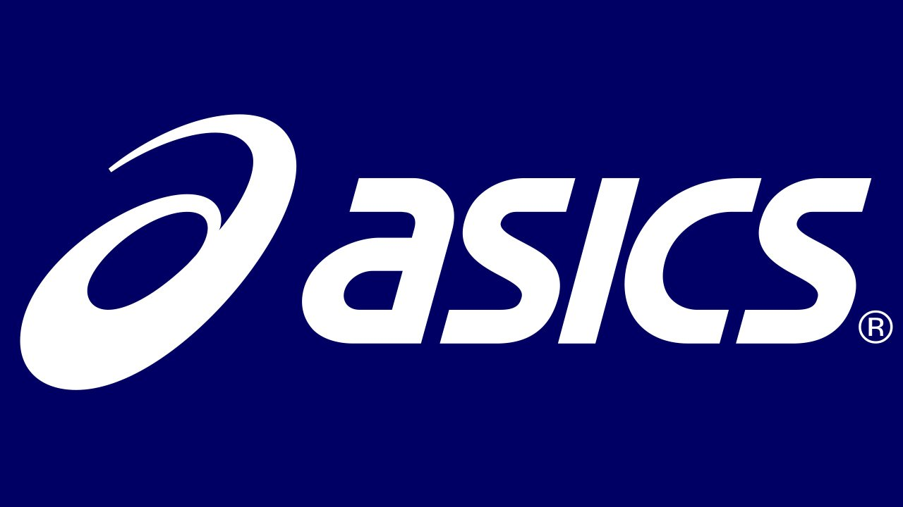

Catalogo de Marcas
Presentando un par de recomendaciones para usted.
| Empresa | Recomendacion | Ejemplo de prendas | Foto |
| Nike | Nike contribuye a sacar lo mejor de sus clientes, al entregarles productos que exceden sus expectativas. Esforzándose por fabricar productos de alta calidad e innovadores, por lo que sus clientes consideran que los productos son extraordinarios. | ☆Nike Air max visión. ☆Nike Air max 90 ultra 2.0 flyknit. ☆Nike Sportswear Legacy, pantalón deportivo. ☆Nike Sportswear Legacy, sudadera con capucha y cremallera completa para hombre. ☆Nike Sportswear Bonded, leggins de mujer. |

|
| Adidas | Adidas es una empresa que se esfuerza por ser un líder global en la industria deportiva y construir una pasión deportiva y una forma de vida divertida. |
★Adidas Samba. ★Adidas Gazelle. ★Adidas Yeezy Boost 350 V2. ★Adidas Futurecraft 4D. ★Adidas Superstar. |

|
| Under Armour | Su mercado objetivo son niños, mujeres y hombres de todas las edades, les gusta la ropa deportiva ajustada.Under armour es una marca deportiva que compite con grandes marcas como la Nike, Adidas, y Puma, ya que llevan el mismo mercado de ropa deportiva. | ➀Zapatillas de running Pre-School ➁Zapatillas de baloncesto ➂UA jet 21 ➃Botas Tacticas de piel impermeables UA Micro G Valsetz ➄Zapatillas de entrenamiento ➅UA HOVR |

|
| Puma | Puma se perfila como una marca elegante pero deportiva enfocada en el bienestar del cliente | °Zapatos deportivos de gamuza Classic XXI °Zapatos de basquetbol RS-Dreamer °Pantalones deportivos Inonic T7 °Chaqueta deportiva Iconic T7 |
 |
| Asics | En la actualidad continúa siendo una de las empresas de referencia en el sector de deportes de alto rendimiento y es una empresa líder en zapatillas de running, tanto para aficionados como para atletas profesionales. | ✪GEL-QUANTUM 360 ✪GEL-KAYANO 28 ✪NOOSA TRI 13 ✪GEL-NIMBUS 23 |
 |